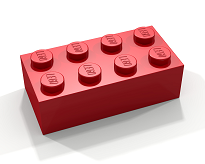

BrickBot

Terms of Service ("Terms")
Last updated: March 21, 2017
Please read these Terms of Service ("Terms", "Terms of Service") carefully before using the https://brickbot.azurewebsites.net website and bot (the "Service") operated by BrickBot ("us", "we", or "our").
Your access to and use of the Service is conditioned on your acceptance of and compliance with these Terms. These Terms apply to all visitors, users and others who access or use the Service.
By accessing or using the Service you agree to be bound by these Terms. If you disagree with any part of the terms then you may not access the Service. This Terms of Service is licensed by TermsFeed to BrickBot.
Links To Other Web Sites
Our Service may contain links to third-party web sites or services that are not owned or controlled by BrickBot.
BrickBot has no control over, and assumes no responsibility for, the content, privacy policies, or practices of any third party web sites or services. You further acknowledge and agree that BrickBot shall not be responsible or liable, directly or indirectly, for any damage or loss caused or alleged to be caused by or in connection with use of or reliance on any such content, goods or services available on or through any such web sites or services.
We strongly advise you to read the terms and conditions and privacy policies of any third-party web sites or services that you visit.
Termination
We may terminate or suspend access to our Service immediately, without prior notice or liability, for any reason whatsoever, including without limitation if you breach the Terms.
All provisions of the Terms which by their nature should survive termination shall survive termination, including, without limitation, ownership provisions, warranty disclaimers, indemnity and limitations of liability.
Governing Law
These Terms shall be governed and construed in accordance with the laws of France, without regard to its conflict of law provisions.
Our failure to enforce any right or provision of these Terms will not be considered a waiver of those rights. If any provision of these Terms is held to be invalid or unenforceable by a court, the remaining provisions of these Terms will remain in effect. These Terms constitute the entire agreement between us regarding our Service, and supersede and replace any prior agreements we might have between us regarding the Service.
Changes
We reserve the right, at our sole discretion, to modify or replace these Terms at any time. If a revision is material we will try to provide at least 30 days notice prior to any new terms taking effect. What constitutes a material change will be determined at our sole discretion.
By continuing to access or use our Service after those revisions become effective, you agree to be bound by the revised terms. If you do not agree to the new terms, please stop using the Service.
Contact Us
If you have any questions about these Terms, please contact us.